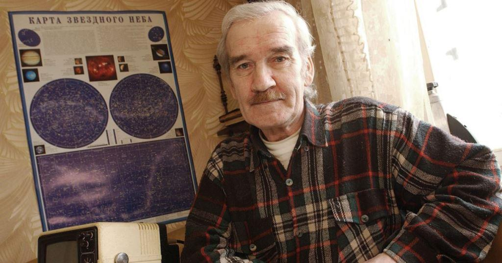
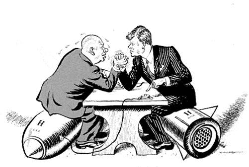
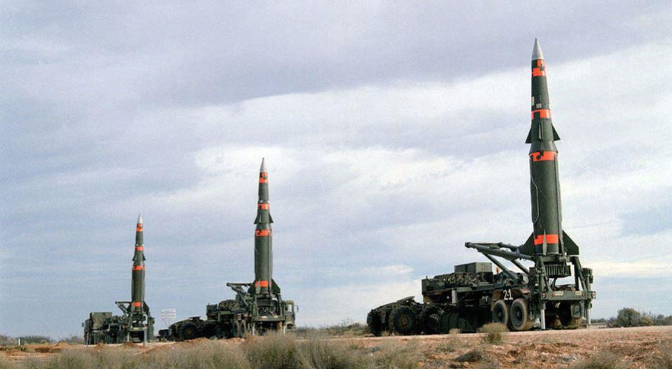
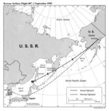
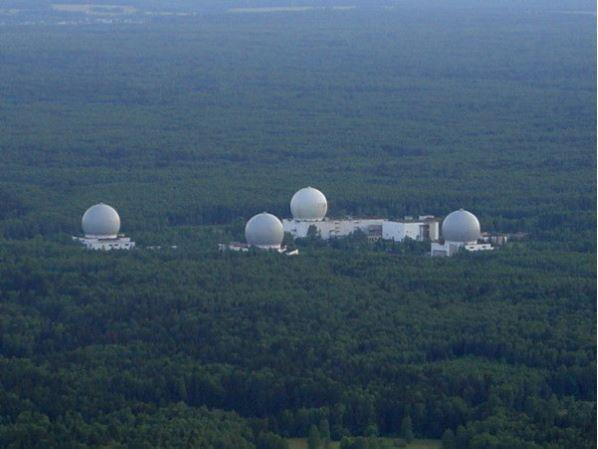
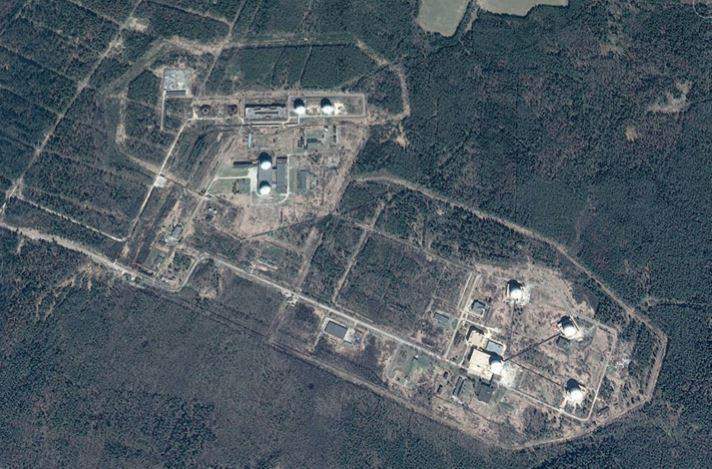
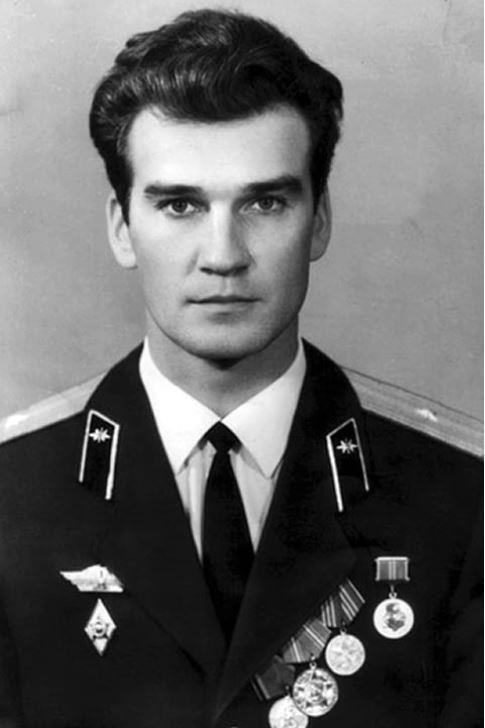
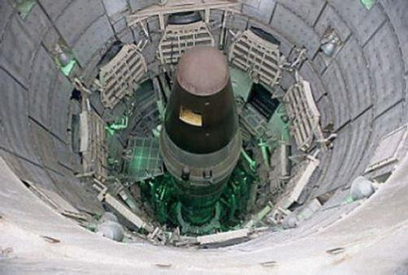
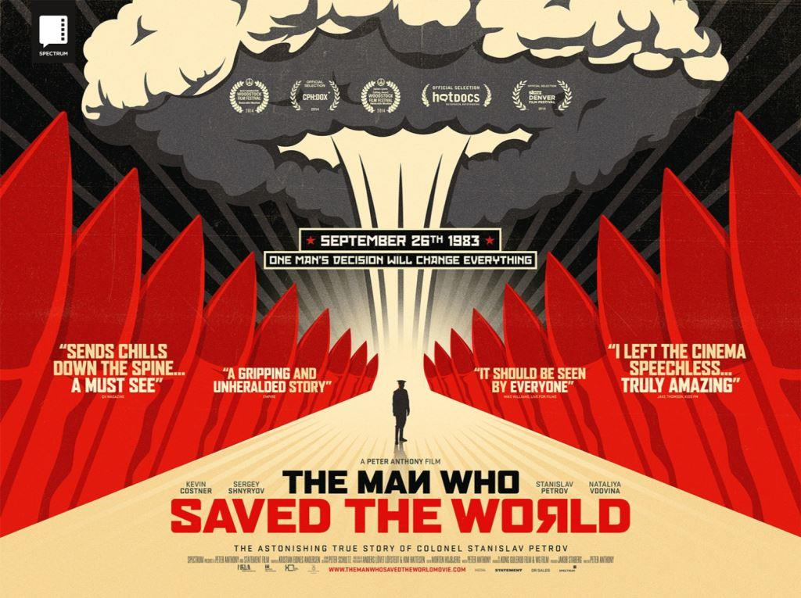
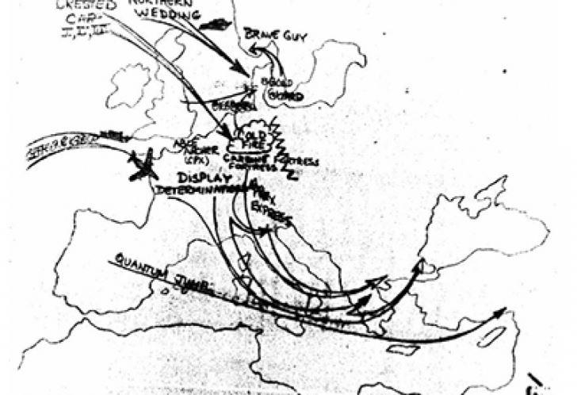

« Des esprits de démons, qui font des prodiges, [...] vont vers les rois de toute la terre, afin de les rassembler pour le combat du grand jour du Dieu tout-puissant. [...] dans le lieu appelé en hébreu Harmaguédon. (Apocalypse 16:13) »
Les années 1982-1984 furent la période la plus dangereuse de la confrontation Est-Ouest depuis la crise des missiles de Cuba1 en 1962. Suivant des documents des services de renseignements américains et russes, la Guerre froide entre les blocs antagonistes atteindra deux fois des sommets critiques durant l’automne 1983 qui aurai pu finir en guerre nucléaire.
En effet deux évènements majeurs auront respectivement lieux en septembre et novembre de cette année 1983 qui auraient pu amener le monde au bord du gouffre et anéantir la surface de notre planète.
Malgré les conséquences catastrophiques qu’aurait pu avoir cette escalade nucléaire imprévue, l’histoire de ces deux incidents restera durant de très nombreuses années inconnues du grand public pour des raisons de non divulgation de dossiers classifiés secret aussi bien aux États Unis qu’en Russie.
Plusieurs années après la fin de l’URSS et malgré la disparition du Pacte de Varsovie il faudra encore attendre plusieurs années avant d’obtenir des informations quant aux deux évènements dont je vais relater l’histoire.
STANISLAV PETROV : LE HEROS MECONNU !
C’est dans la plus grande indifférence que le 19 mars 2017 s’éteint, dans la banlieue de Moscou, Stanislav Petrov à l’âge 77 ans. Qui est cet homme, qu’elle intérêt d’écrire un article sur ce lieutenant-colonel des forces de défense anti-aérienne de l'Armée soviétique à la Retraite.
Jusqu’à ce jour, de nombreux manuels d’histoire dans le monde consacrent un chapitre sur la crise des missiles de 1962, qui aurait pu aboutir à une guerre chaude entre les États Unis et l’URSS. Cet épisode crucial dans les tensions militaires entre les États Unis et l’URSS durant la guerre froide a été largement relayé durant de très nombreuses années par des ouvrages et des films et presque tout a été dit ou écrit sur le sujet. Car outre la crise internationale il met en lumière la confrontation entre John F. Kennedy et Nikita Sergueïevitch Khrouchtchev.
Par contre, pas une note ou un article ayant pour sujet la nuit du 26 septembre 1983 où Stanislav Petrov évita une guerre nucléaire !
UN POINT DE SITUATION
Depuis la fin des années 1970, un bras de fer s’engage entre les deux grandes puissances à travers leurs alliances militaires que sont l’OTAN d’une part et le Pacte de Varsovie de l’autre. Il connaitra son paroxysme dès le début des années 1980 autour du déploiement de missiles à têtes nucléaires en Europe.
En 1981, Iouri Andropov, alors chef du KGB et les membres du Politburo sont obnubilé par la possible imminence d’une attaque nucléaire américaine contre le territoire de l’URSS. Pour s’en garantir, Andropov lance l’opération Ryan2 visant à réunir des renseignements sur les intentions possibles de l'administration Reagan de pouvoir lancer une attaque nucléaire contre l'URSS.
En 1982, Andropov remplace Brejnev à la mort de ce dernier comme secrétaire général en novembre et comme président du Præsidium du Soviet suprême en juin 1983. Alors qu’Andropov occupe ses fonctions depuis seulement trois mois Ronald Reagan annonce le 23 mars 1983, le développement de l'Initiative de défense stratégique.
L'utilisation de nouvelles technologies devait rendre les États-Unis invulnérables face à une attaque de missiles intercontinentaux soviétiques. En outre, l’Allemagne était prête à accueillir les nouveaux missiles Pershing II en réponse à l’installation de missile SS 20 dans la zone d’influence de l’Est. Ces missiles étaient conçus pour être lancés depuis des véhicules mobiles, ce qui rend les sites de lancement très difficiles à identifier pour les unités de reconnaissances et d’alertes russes.
Le temps de vol des missiles depuis la RFA jusqu'en Russie européenne n'était que de quelques minutes, ce qui laissait à Moscou un temps de réaction presque nul. Pour les dirigeants soviétiques les États-Unis étaient dans un futur proche dans la capacité de lancer des missiles contre l'URSS sans craindre de représailles.
Cette situation était inacceptable et la crainte d'une attaque surprise contre l’URSS entraine le développement accéléré du programme Ryan. Il s’agit de réunir rapidement toutes les informations possibles sur les préparatifs présumés des Américains et tout particulièrement sur la « guerre des étoiles » du président Ronald Reagan et le déploiement de missiles nucléaires américains en Europe.
C’est alors que deux mois et demi avant l'installation des premiers missiles de croisière en Europe survient le 1er septembre 1983 la destruction du Boeing sud-coréen vol 007 dans la mer d'Okhotsk qui avait fait intrusion au-dessus des bases militaires du Kamtchatka et de Sakhaline (Extrême-Orient soviétique) où périrent 269 personnes abattues par la défense aérienne soviétique. La tension entre les deux grands est à son comble et la moindre étincelle peut déclencher une crise politique mondiale.
LA BASE SECRETE SERPOUKHOV-15
Comme à son accoutumé le lieutenant-colonel ingénieur Stanislav Petrov prend son service d’officier de garde sur la base d'alerte stratégique top secrète de Serpoukhov-153.
Classé parmi les unités les plus secrètes de l’armée soviétique, et site opérationnel de la plus haute importance, aucun membre de la famille Petrov n’est au courant des fonctions réelles qu’il occupe sur cette base.
Ce site hautement stratégique est un village militaire près de Kurilovo dans l'oblast de Kalouga à une centaine de kilomètres au sud de Moscou ; l'emplacement du centre de contrôle occidental pour les satellites Oko de Russie a pour but de lancer l'alerte précoce en cas de lancements de missiles balistiques continentaux principalement provenant des États-Unis. Les informations fournies sont traitées et utilisés entre autres par le radar d'alerte précoce Voronezh, pour le lancement de l'alerte ou le système de missile antibalistique A-135.
Chargée de recueillir les informations provenant des satellites soviétiques surveillant d'éventuels tirs de missiles nucléaires contre l'Union soviétique Serpoukhov-15 est classé parmi les unités stratégiques de la plus haute importance.
LE JOUR OU LE MONDE FAILLI BASCULER DANS UN CONFLIT NUCLEAIRE
En ce jour du 25 septembre 1983, et peu après minuit, alors que Petrov et son équipe vaquent à leurs occupations de surveillance et de veille, le système informatique d'alerte anti-missiles Krokus se déclenche. Les sirènes retentissent et sur l’écran radar s’affichent en lettres rouge : « START », « lancement ».
Le système d’alerte signale le départ d’un missile intercontinental Minuteman III en provenance d’une des bases de lancement dans le Montana aux États Unis. Il n’a jamais été pris en défaut, par conséquent il ‘y a pas de doute.
Durant quelques secondes c’est la panique au centre de contrôle, l’effervescence est à son comble car pour les acteurs de cette nuit d’horreur l’ennemi lance ses missiles contre l’URSS.
Officier le plus gradé il est par conséquent le responsable de la suite des opérations et chargé de prendre contact avec l’échelon le plus élevé pour leur faire part de ses observations.
Il faut agir ! L’information transmise par le satellite d’observation militaire est clair et sans ambiguïté. La procédure est simple et vitale : alerter immédiatement la hiérarchie afin qu’elle prévoit et enclenche les procédures permettant une riposte immédiate et alerter l’ensemble des forces armées soviétiques et alliés du Pacte de Varsovie.
Malgré l’agitation et la tension palpable parmi tous les personnels de permanence, le lieutenant-colonel Petrov garde la tête froide. Il est le garant de la sécurité de la mère patrie et le sort de millions de personnes est entre ses mains. Il sait également qu’il est l’homme qui décidera ou non du sort de l’humanité. Instantanément il reprend son équipe en main et ordonne à ses hommes de se ressaisir et de reprendre leur poste. Il sait que le temps lui est compté.
Les premiers moments de flottement passés le lieutenant-colonel Petrov s’interroge sur le bienfondé de cette attaque américaine. Dans aucun des nombreux scénarios imaginés lors de nombreux exercices d’alerte et l’étude de la nouvelle stratégie nucléaire américaine qui ne prédispose pas Reagan à attaquer l’URSS en premier directement et encore moins avec un seul missile. Petrov prend la décision d’expliquer cette « attaque » comme fausse interprétation dû à la défaillance technique du système informatique et en convainc ses autorités.
C’est alors que le système de détection se déclenche à nouveau et signale cette fois ci le lancement de 5 autres missiles successifs en provenance de la Malmstrom Air Force Base, aux États-Unis.
Ces tirs de lancement sont une fois de plus détectés par le satellite d'alerte précoce Cosmos 1382, de type Oko. Le doute submerge momentanément Petrov ce serait-il trompé ?
Il demande la confirmation visuelle que doivent lui apporter, dans ce cas de figure, d’autres moyens de contrôle. Mais les nuages empêchent d’établir une telle preuve. Petrov fait preuve d’un sang-froid extraordinaire et reste de marbre.
Il s’interroge : d’abord, les missiles détectés sont au nombre de cinq. C’est peu, lui semble-t-il. Ensuite, ingénieur et concepteur du système informatique relié au satellite Kosmos 1382, ce dernier repose sur un principe d’observation des rayons infrarouges. Or, cette technologie peut être source d’erreur car la terre connaît des émissions de chaleur naturelle qui peuvent tromper le système.
Enfin, l’unité de surveillance aérienne reste muette. Stanislav Petrov doute, mais chaque seconde qui passe le rapproche de sa seule certitude : il ne veut pas être le déclencheur de la troisième guerre mondiale.
Alors, aussi extraordinaire que cela puisse paraître il ne fait rien et décide de traiter une fois de plus ces alertes comme des erreurs d’interprétation malgré les consignes strictes, car la riposte doit être immédiate ! Son avis est suivi et permit ainsi d'éviter une riposte soviétique qui aurait pu être le point de commencement d'un conflit nucléaire ouvert. Il ne sait pas pourquoi mais il est certain d’avoir pris la bonne décision. Il pense à sa famille et ses 4 enfants ainsi qu’aux millions de citoyens qui pourraient disparaître dans des éclairs éblouissants.
Sur les écrans radars les plots lumineux représentants les missiles s’approchent dangereusement de l’Union soviétique. Petrov sait qu’en moins de 17 minutes les premiers missiles à ogives multiples qui équipent les missiles américains devrait atteindre ses cibles respectives. Ces 17 minutes sont interminables et sont les plus longues de sa vie et Petrov scrute et ne quitte pas des yeux les écrans et s’accroche au bienfondé de sa décision. Il songe aux millions de soviétiques qui dorment à poings fermés et ne savent rien de la menace qui plane sur leur tête.
En effet les missiles américains sont équipés d’ogives de pas moins de 170 kt de TNT, soit 100 fois au minimum de la puissance de la bombe larguée sur Nagasaki en 1945.
Dans quelques minutes il sera peut-être trop tard, penses Petrov. Les dernières secondes s’affichent sur l’horloge électronique…puis plus rien…les scopes se vident et n’affichent plus aucun signe de présence d’un quelconque missile et il ne reçoit pas d’appels du haut commandement. C’est une explosion de joie et un soulagement extrême pour tous les acteurs de cette nuit de cauchemar et d’angoisse.
À cet instant Petrov prend conscience que s’il avait pris autre décision il n’aurait pu éviter une catastrophe planétaire. Car dans le cas contraire, il sait que les autorités suprêmes n’auraient pas hésité un seul instant pour déclencher le feu nucléaire contre les États Unis et leurs alliés en utilisant toute la composante terrestre avec plus de 1 200 ICBM emportant un total d'environ 4 200 ogives d'une puissance globale d'environ 4 100 mégatonnes répartis sur plus de 300 sites de lancement dans 28 bases en Russie d'Europe, en Ukraine et le long du Transsibérien et disposait d'un effectif de 300 000 militaires.
Ses pensées vont à ses enfants et à ses proches qui ont échappé, sans le savoir, à une mort certaine et la planète à l’apocalypse nucléaire.
D’un coup toute l’anxiété disparaît, dans l’immédiat il débouche et boit une demi-bouteille de vodka avant de partir se coucher. Après avoir dormi plus que de coutume il retourne ensuite à la maison gardant pour lui son terrible secret, mais sachant qu’il n’a fait que son devoir.
UNE ENQUETE APPROFONDIE
Par la suite, un diagnostic des systèmes soviétiques mit en cause le logiciel embarqué par les satellites, qui a fait une interprétation erronée de la réflexion des rayons du Soleil sur les nuages.
Une analyse approfondie permettra de découvrir que ce sont des rayons du soleil qui reflété par les nuages au-dessus de certaines des silos des base de missiles US ont trompés les capteurs sensibles des satellites et produits une détection erronée confondant ainsi le dégagement d'énergie au décollage de missiles
Pour des raisons évidentes de sécurité, personne n’a jamais rien su de cet épisode, durant de très nombreuses années.
UNE RECONNAISSANCE TARDIVE
Il faudra attendre plusieurs années après l’effondrement de l’URSS pour que les événements de cette nuit commencent à être divulgués au grand public4. Aussi, ce n’est que sept ans après la fin de l’Union soviétique, et quinze ans après les faits l’histoire de cette nuit de tous les dangers a été rapporté.
C’est d’abord un article dans la presse allemande qui fait connaître une certaine notoriété à Stanislav Petrov. Le 21 mai 2004, puis le 19 janvier 2006, il fut distingué pour ses actions par l'Association of World Citizens, une association pour la paix dans le monde basée à San Francisco.
Prenant la mesure de l’acte exceptionnel il est proposé et recevra le prix des Medias Allemand. Puis Peter Anthony, un réalisateur danois lui consacrera un documentaire en 2015 qui fera connaître Petrov aux États-Unis il sera même célébré aux Nations unies.
Malgré cette notoriété tardive ne lui apportera aucun avantage. Stanislav Petrov vivra chichement de sa modeste retraite militaire dans un petit appartement près de Moscou et sombra dans l’alcoolisme. Alors que de ses amis allemands voulait lui souhaiter un bon anniversaire au mois de mai 2017 que l’on apprit que l’homme qui sauva le monde était décédé dans la plus grande discrétion.
Stanislav Petrov a été distingué pour sa réaction par l'Association of World Citizens
IN MEMORIAM
Le secrétaire d'État américain Rex Tillerson, intervenant au Conseil de sécurité de l'Onu, a rendu hommage à Stanislav Petrov, qui a joué un grand rôle dans la sauvegarde de la paix lors de la guerre froide.
L’EXERCICE ABLE ARCHER 83
Alors que l’on venait tout juste de frôler l’apocalypse nucléaire, l'OTAN mène du 7 au 11 novembre 1983, dans le but d'entraîner ses postes de commandement militaires un exercice militaire de très grande envergure.
Le niveau de réalisme atteint par les opérations militaires déclenchées par l’État-major de l’OTAN, associé à un environnement international particulièrement tendu ont mené une partie de l'état-major soviétique à craindre qu'une première frappe américaine fût imminente et mis en alerte les unités du pacte de Varsovie.
Toutes les unités aériennes est-allemandes et soviétiques stationnées en RDA et en Pologne sont placées en état d’alerte maximum. Les forces de frappe nucléaires soviétiques furent mises en état d'alerte. La menace de confrontation s'éteignit d'elle-même avec la fin d'Able Archer.

Stanislav Petrov a été distingué pour sa réaction par l'Association of World Citizens
Cet incident, relativement obscur, est considéré par certains comme l'un des moments où les deux blocs ont été le plus proche d'une guerre nucléaire depuis la crise des missiles de Cuba.
ÉPILOGUE
L’ampleur de l'opération Ryan fut réduite en 1984, après la mort de ses principaux soutiens, Iouri Andropov et le ministre de la Défense Dmitri Oustinov mais elle continua jusqu'en novembre 1991.
A.W.
1 Selon un document déclassifié de l’Agence de sécurité nationale américaine (NSA), intitulé « American Cryptology During the Cold War ».
2 (en russe : РЯН, acronyme de Ракетно-Ядерное Нападение pour attaque de missile nucléaire).
3 Le nom Serpukhov-15 est un nom de code suivant la pratique établie pour nommer les villes fermées et les installations militaires. Il doit son nom à la ville la plus proche, Serpoukhov, dans l'oblast de Moscou, à environ 35 kilomètres.
4 Les documents retraçant cette nuit de septembre 1983, longtemps enfouis dans les entrailles de l’Histoire, ont été déclassifiés en 1998.
Partager cette page